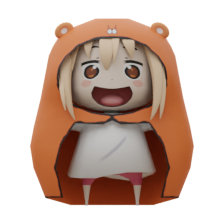

Image Conditioned 3D Native Diffusion Results
Reference Image

Output Coarse Mesh
Reference Image
Output Coarse Mesh


We present a novel generative 3D modeling system, coined CraftsMan, which
can generate high-fidelity 3D geometries with highly varied shapes, regular
mesh topologies and detailed surfaces, and notably, allows for refining the
geometry in an interactive manner. Despite the significant advancements
in 3D generation, existing methods still struggle with lengthy optimization
processes, irregular mesh topologies, noisy surfaces, and difficulties in
accommodating user edits, consequently impeding their widespread adoption
and implementation in 3D modeling software. Our work is inspired by the
craftsman, who usually roughs out the holistic figure of the work first and
elaborate the surface details subsequently. Specifically, we employ a 3D
native diffusion model, which operates on latent space learned from latent
set-based 3D representations, to generate coarse geometries with regular
mesh topology in seconds. In particular, this process takes as input a text
prompt or a reference image, and leverages a powerful multi-view (MV)
diffusion model to generate multiple views of the coarse geometry, which
are fed into our MV-conditioned 3D diffusion model for generating the 3D
geometry, significantly improving robustness and generalizability. Following
that, a normal-based geometry refiner is used to significantly enhance the surface details. This refinement can be performed automatically, or inter-
actively with user-supplied edits. Extensive experiments demonstrate that
our method achieves high efficiency in producing superior-quality 3D assets
compared to existing methods.
Reference Image
Output Coarse Mesh
Reference Image
Output Coarse Mesh
A cute panda
Leaning Tower of Pisa
Viking axe, fantasy, weapon
A cute rabbit
Our method first transforms the input single image or text prompt into multi-view images using a multi-view diffusion model. These generated multi-view images are then fed into a native 3D diffusion model as conditions to produce a coarse mesh with regular topology. Finally, a surface normal-based refinement is employed to improve or edit the coarse geometry, enhancing it with intricate details. The refinement process features two key tools: an automatic global refinement and an interactive Magic Brush, which together enable efficient and controllable 3D modeling.
Michelangelo:
a Shape-Image-Text-Aligned 3D Variational Auto-Encoder (SITA-VAE) and a conditional Aligned 3D Shape Latent Diffusion Model (ASLDM). Thanks for their open source;
OpenCLAY:
a large-scale generative model composed of a multi-resolution 3D Variational Autoencoder (VAE) and a minimalistic latent 3D Diffusion Transformer (DiT);
Direct3D:
a Direct 3D Variational Auto-Encoder (D3D-VAE) and a Direct 3D Diffusion Transformer (D3D-DiT) scalable to in-the-wild input single view images;
@article{li2024craftsman,
author = {Weiyu Li and Jiarui Liu and Rui Chen and Yixun Liang and Xuelin Chen and Ping Tan and Xiaoxiao Long},
title = {CraftsMan: High-fidelity Mesh Generation with 3D Native Generation and Interactive Geometry Refiner},
journal = {arXiv preprint arXiv:2405.14979},
year = {2024},
}